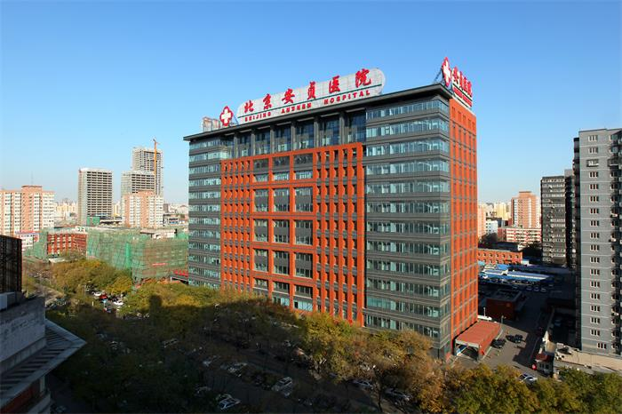
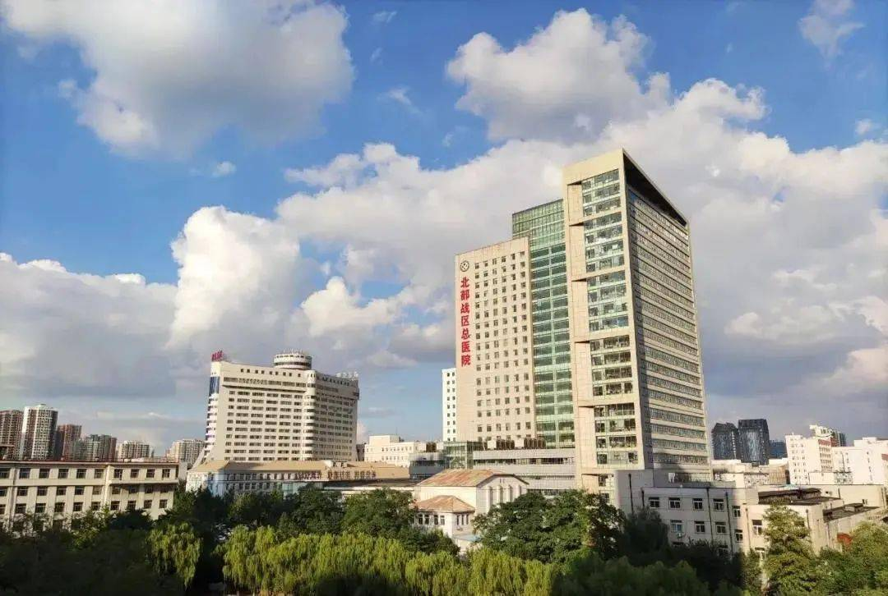

时间：2023-05-13 访问量：1147
 伊戎陪诊，助您就医无忧！
伊戎陪诊，助您就医无忧！
今天，伊戎陪诊员小妮陪诊了一位患有心肌梗塞的患者就医，回来跟我们分享了他的经历，大家听后都很有感触。
这位患者今年62岁，男性，其实年龄并不大，但已是得过两次脑梗了，在今年的3月20日，晕倒在家，被家人送到医院后确诊为心肌梗塞。在患病的当天，患者先晕倒在地，几乎同时老伴也心肌梗塞病发。唯一的儿子在国外工作，老伴晕倒后很快清醒，给亲戚打电话求助。当亲戚火速赶到时，患者老伴已爬到家门口打开了家门，之后被救护车及时送往天津市第四中心医院就诊，抢救及时并无生命危险。
患者出院一个月，现在行动自如，但无法清楚的说话并与人沟通，今天小妮陪患者到医院复查，医生让患者做了心电图和心脏彩超等检查，检查结果显示患者在持续用药的情况下保持不错，不需要进一步治疗，可以继续用药维持。就诊完毕后小妮将患者送回家中，并嘱咐患者按时用药，全程没有发生任何突发情况，结果也是皆大欢喜，回家后患者的老伴看到医生的诊断后，笑容很是舒心。
说巧不巧，我们最近也在一些网站平台上关注到陪诊工作中的风险提示，比如心脏病患者不接诊，原因大家可想而知，心脏病患者突发情况比较多，像今天小妮接诊的这位患者，全程无家属陪同更是少见。但是我们在了解到患者的情况后，与患者远在国外的儿子联系，得知患者的特殊情况，毅然决定接受患者儿子的委托，全程陪同检查并接送到家。现在很多的空巢老人都面临这样的情况，儿女不在身边，生病无人照顾，如果都因为突发情况多、风险高而不去服务这样的患者，那么“陪诊”这一行业的意义就是不完整的。我想只要我们在陪诊的过程中更加细心，周到，并且做好充分的准备工作，提供专业化的陪诊服务，是可以避免一部分突发情况的发生，可以让患者放心就医，让不在身边的子女没有后顾之忧。
今后我们会不断提升我们的服务质量及专业化水平，全面应对各类病症的突发情况，帮助患者安心就医，解决空巢老人就医难的情况，这将是伊戎陪诊的服务宗旨及目标，我们将不断努力着。
科普分享|内容摘自三甲医院专家文章
心肌梗塞病人的日常护理
尊嘱服药，定期复查，健康饮食，不适就诊，适当活动，心情放松。这是总的原则，但每一个心肌梗死面积不一样大，堵塞血管不一样，治疗过程不一样，所以还是需要个体化建议。 医生只能在原则基础上，给出一些更加详细的建议: 第一、做没做支架都需要长期服用阿司匹林加他汀，根据血压加普利或沙坦、倍他乐克等。支架术后，要坚持服用阿司匹林加氯叱格雷/替格瑞洛，一年到一年半。双联抗血小板药物的目的就是预防支架内再狭窄，所以这是最基本的要求。具体的日常护理如下：
1、心肌梗死患者的饮食很关键:对于患者来说，日常饮食的总热量一定不要过高，防止发胖。尽量少吃动物性脂肪以及含胆固醇较高的食物，这些食物有动物内脏、肥肉、鱼子、蛋黄等等。患者的饮食主张清淡，食盐的摄入量要限制，富含维生素E的食物、植物蛋白、植物油的食物是首选，此外还要注意，每餐都不要过饱。
2、生活中需要适当适量的运动:并不是患有心肌梗塞就不能运动了，而是要进行适当适量的运动，这些对于恢复患者的体力以及改善全身的血液循环都有很大的益处，且对于心肌梗塞部位的侧枝循环建立有利。患者可以选择散步、做保健体操、打太极拳等等轻缓一点的运动，也可做四肢或躯干部位的按摩。
3、合理安排生活和工作:在生活上要注意规律，情绪要乐观向上，波动不要剧烈，充足睡眠要得到保证，还要避免紧张过度的劳动。此外需注意防止大便干燥，千万不要用力大便。嗜烟酒者一定要戒除烟酒。
4、预防并及时治疗感染:避免受凉，如果或者不小心出现了发烧感冒、腹泻等病症的话则应该立刻送医治疗，否则会出现心功能不全或心律不齐。
患者要时刻注意观察病情变化，患心肌梗塞以后还可能再次发生梗塞，也可能出现心律不齐、心功能不全或者脑血管疾病。因此患者应时刻注意自我感觉的变化，如有新出现的或加重的心慌、气短、胸闷、胸痛、头晕、四肢麻木无力等情况，要同时检查自己脉搏的次数和跳动规律，有必要的时候患者应该到医院进行检查。
对症医院推荐（仅供参考）
中国医学科学院阜外医院
复旦排行：全国心血管内科排行榜第1名
复旦大学附属中山医院
复旦排行：全国心血管内科排行榜第2名
首都医科大学附属北京安贞医院
复旦排行：全国心血管内科排行榜第3名
中国人民解放军北部战区总医院
复旦排行：全国心血管内科排行榜第4名
浙江大学医学院附属第二医院
复旦排行：全国心血管内科排行榜第5名
 4008382558
4008382558